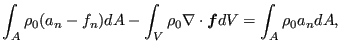

The governing equations for diffusion mass transfer are [34]
| (335) |
and
|  | (336) |
where
| (337) |
and
| (338) |
In these equations
is the mass flux of species A,
is the mass diffusivity,  is the mass fraction of species A and
is the mass fraction of species A and  is the density of species A. Furthermore, is the rate of increase
of the mass of species A per unit volume of the mixture. Another way of
formulating this is:
is the density of species A. Furthermore, is the rate of increase
of the mass of species A per unit volume of the mixture. Another way of
formulating this is:
| (339) |
and
 |
(340) |
where
 |
(341) |
and
| (342) |
Here,
 is the molar flux of species A,
is the mass diffusivity,
is the molar flux of species A,
is the mass diffusivity,  is the mole fraction of species A and
is the mole fraction of species A and  is the molar concentration of species A. Furthermore,
is the molar concentration of species A. Furthermore,  is the rate of increase
of the molar concentration of species A.
is the rate of increase
of the molar concentration of species A.
The resulting equation now reads
| (343) |
or
 |
(344) |
If  and
and  are constant, these equations reduce to:
are constant, these equations reduce to:
 |
(345) |
or
 |
(346) |
Accordingly, by comparison with the heat equation, the correspondence in Table (16) arises.